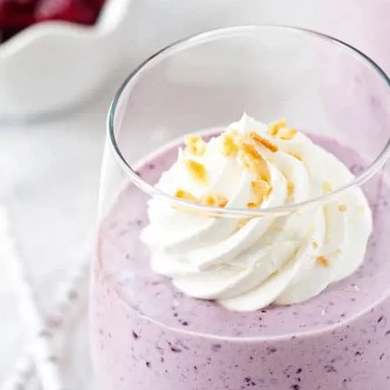

Instead of grabbing a soda why not make this instead. Be the mixologist you've always dreamt of being.
At least that's how I feel when experimenting with a variety of ingredients. Tasty, healthy, and never boring.